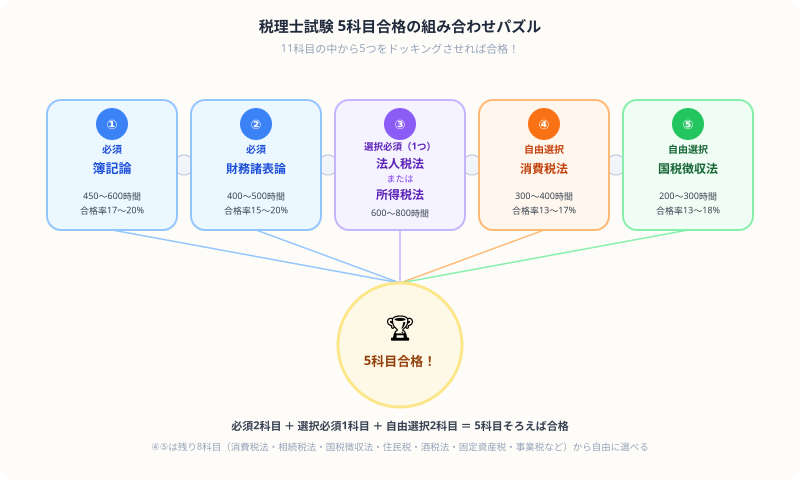

税理士試験の科目選択・学習計画の立て方【2026年版】
こんにちは、若葉です！
大学の講義などで「税理士試験」を薦められた人も多いと思います。でも、11科目から5科目選ぶ表を初めて見たとき……「組み合わせ多すぎるし、合格まで10年もかかるの！？うわっ、なんじゃこりゃ、無理ゲーじゃん！」とフリーズしませんでしたか？（笑）。
税理士試験は、会計学2科目と税法3科目の計5科目に達すると合格となる科目合格制です。
この記事では、国税庁の制度情報と、自分の生活で続けられるかを確認する選択シートを使って、1科目目を決める手順を整理します。
科目を選ぶ前に、1週間に実際に確保できる学習時間と、何年で何科目を積みたいかを書き出してください。科目数の多さではなく、生活の中で続けられる条件から1科目目を決めます。
「11科目から5科目」という選択制度に戸惑っている人、働きながら何年かけて合格を目指せばいいか迷っている人向けに、科目の選び方と、生活に合わせて学習計画を見直す手順をまとめました。
科目数より、1年続けられる学習条件を先に決める
科目の組み合わせを先に決めると、仕事や大学との両立が後回しになります。受験資格や最新の試験案内は公式情報で確認したうえで、自分の時間と得意な作業から候補を絞り、1週間の記録で無理がないかを判定します。
| 先に確認すること | 記録する内容 | 次の判断 |
|---|---|---|
| 毎週使える時間 | 平日と休日に確保できる学習枠 | 教材を増やす前に、継続できる科目数へ調整する |
| 計算と理論の得意不得意 | 問題演習と暗記で止まった箇所 | 科目名の印象ではなく、必要な練習方法で比較する |
| 受験までの期限 | 受験予定時期と中間確認日 | 1週間ごとの到達点を置き、遅れたら科目や量を見直す |
税理士試験の基本情報
| 項目 | 内容 |
|---|---|
| 試験形式 | 科目合格制（会計学2科目＋税法3科目の計5科目） |
| 必須科目 | 簿記論・財務諸表論（2科目必須） |
| 選択必須 | 所得税法または法人税法（どちらか1科目必須） |
| 選択科目 | 税法科目から3科目を選択（所得税法または法人税法を含む） |
| 令和8年度の日程 | 2026年8月4日〜6日（各科目2時間） |
| 受験資格 | 簿記論・財務諸表論は受験資格なし／税法科目は学識・資格・職歴等の要件あり |
| 合格率（科目別） | 年度・科目ごとに国税庁の試験結果を確認 |
出典：国税庁「税理士試験の概要」、「税理士試験受験資格の概要」、「令和8年度（第76回）税理士試験公告」（2026年8月30日確認）
なぜ税理士試験は「1科目ずつ」でいいのか、身近な話で理解する
「5科目を選ぶ」と聞くと身構えてしまいますが、税理士試験の科目合格制度は他の資格試験とは根本的に設計思想が違います。この違いを理解しておくと、長期戦への不安がかなり和らぎます。
ゲームのセーブデータをイメージしてください。一発勝負のゲームなら、全ステージを1回のプレイでクリアしなければ最初からやり直しですが、セーブ機能があるゲームなら、クリアしたステージのデータは消えず、次にプレイするときはその続きから進められますよね。
これを大学の単位取得で例えると、もっとイメージしやすくなります。大学の卒業要件は「1年で全部の単位を取る」のではなく、必要な単位を4年間かけて少しずつ取得していく仕組みです。今年取れなかった単位は来年また挑戦すればよく、既に取った単位が消えることはありません。
税理士試験の科目合格制度もまさにこの「セーブデータ方式」です。一度合格した科目は生涯有効なので、今年は簿記論だけ、来年は財務諸表論だけ、というように自分のペースで着実に進められます。「5科目を一度に揃えなければいけない」という一発勝負のプレッシャーから解放されると、1科目ずつの学習に集中しやすくなります。

税理士試験は、上の図のように「必須2科目」「選択必須1科目」「自由選択2科目」の5ピースをドッキングさせれば合格というシンプルなパズルです。どのピースを選ぶかで、必要な勉強時間も戦略も大きく変わります。
科目を選ぶ前の確認シート
科目別の必要時間・難易度・年収を一律のランキングでは掲載しません。国税庁の制度情報を確認したうえで、次の条件を記録して候補を絞ります。
| 確認する条件 | 記録すること | 決めること |
|---|---|---|
| 受験資格 | 税法科目の学識・資格・職歴要件を満たすか | 受験可能な税法科目だけを候補に残す |
| 毎週の学習時間 | 平日・休日に確保できる時間と、受験までの月数 | 同時に進める科目数を決める |
| 演習で止まる場所 | 計算、理論、条文のどこで時間を使うか | 教材・質問環境・演習計画を比較する |
| 目指す業務 | 関心のある税務分野と、実務を知るために確認する先 | 科目名の印象ではなく、自分で調べた条件から選ぶ |
学習計画と教材を決める順番
- 国税庁の受験資格と試験公告を確認し、受験可能な科目をリスト化する。
- 候補を1〜2科目に仮置きし、平日・休日に使える時間を4週間記録する。
- 教材や講座は公式ページで、質問の可否・答練の有無・改訂の扱い・税込価格を個別に確認する。
- 月末に未消化範囲と演習で止まる場所を見直し、科目数や教材を調整する。
受験前に避けたい判断
- 受験資格を確認せず、税法科目を選ぶ。
- 確保できる学習時間を測らず、同時に進める科目数を増やす。
- 教材・講座の価格や内容を比較せずに購入する。
この記事の判断：税理士は「1年で全部」ではなく、生活に合わせて科目を積む
税理士試験の学習計画は、受験資格、確保できる時間、会計・税法の土台で変わります。最初に問題演習で止まる場所と平日・休日に使える時間を記録し、受験する科目数を仮置きします。科目数は気合いではなく、毎週確保できる学習時間と月ごとの進み具合で見直します。
- 受験可能な科目を仮置きし、1週間の実働時間を測る。
- 演習で止まる場所を記録し、必要な教材・質問環境を比較する。
- 月末に正答率と未消化範囲を確認し、継続可能な科目数かを判断する。
まとめ
- 会計学2科目と税法3科目、所得税法または法人税法のいずれかを含む計5科目で合格となる
- 科目合格制のため、一度に5科目を受験する必要はない
- 税法科目は、受験資格と国税庁の受験案内を確認して候補を絞る
- 費用・必要時間・教材は一律に比較せず、自分の条件と公式情報から確認する
この記事が少しでも参考になったら……
次の一手：候補科目を2つに絞り、合格までの年数と取得後の業務を比較する。 税理士と会計士を比較する